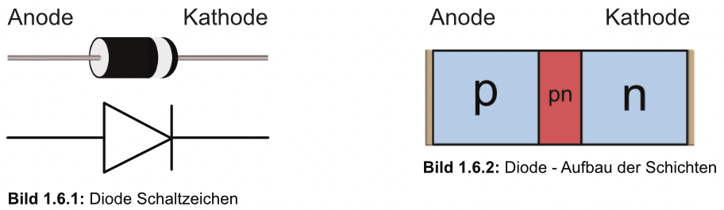
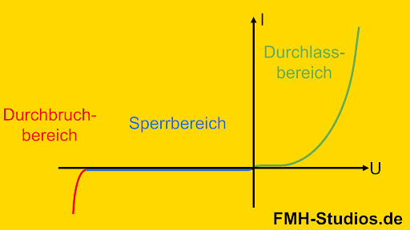

Dioden
Eine Diode ist ein elektronisches Bauelement, das den Stromfluss in nur eine Richtung erlaubt. Sie besteht in der Regel aus einem p-n-Übergang, der durch zwei unterschiedlich dotierte Halbleitermaterialien gebildet wird: eine p-dotierte und eine n-dotierte Schicht. Dioden finden in zahlreichen elektronischen Anwendungen Verwendung, von Gleichrichtern und Spannungsreglern bis hin zu Signalverarbeitung und Lichtemission.

Grundlegende Funktionsweise einer Diode
Im p-n-Übergang der Diode treffen Elektronen aus dem n-Bereich auf Löcher aus dem p-Bereich, wodurch eine Sperrschicht entsteht. Diese Sperrschicht wirkt als Barriere für den Stromfluss. Sobald eine bestimmte Spannung (die sogenannte Durchlassspannung) an die Diode angelegt wird, überwindet der Strom diese Barriere und fließt durch die Diode.
Spannungsmodi der Diode
Durchlassrichtung: Bei einer positiven Spannung am p-Bereich und einer negativen am n-Bereich verringert sich die Sperrschicht, und die Diode leitet Strom. Die Mindestspannung, die zum Leiten benötigt wird, ist die Durchlassspannung
U_F.Für Siliziumdioden liegt diese Spannung bei etwa
0.7 V, für Germaniumdioden bei0.3 V.Sperrrichtung: Bei einer negativen Spannung am p-Bereich und einer positiven am n-Bereich vergrößert sich die Sperrschicht, und die Diode sperrt den Stromfluss. Ab einer bestimmten Spannung, der Durchbruchspannung
U_BR, kann es jedoch zu einem plötzlichen Anstieg des Stroms kommen.
Diodenkennlinie
Die Diodenkennlinie beschreibt die Beziehung zwischen der angelegten Spannung U und dem fließenden Strom I und zeigt zwei Hauptbereiche:
- Durchlasskennlinie: Sobald
U≤U_F, steigt der Strom exponentiell an. - Sperrkennlinie: Bei negativen Spannungen fließt nur ein minimaler Sperrstrom, bis die Durchbruchspannung
U_BRerreicht wird.

Strom-Spannungs-Gleichung der Diode
Die Strom-Spannungs-Charakteristik einer idealen Diode wird durch die Diodengleichung beschrieben: wobei:
I: der Diodenstrom,I_S: der Sättigungsstrom (typisch sehr klein),U: die anliegende Spannung,n: der Idealfaktor (meistens 1 bis 2),V_T: die thermische Spannung: bei Raumtemperatur (300 K).
Typen von Dioden und ihre Anwendungen
Standard-Gleichrichterdiode: Wird in Gleichrichterschaltungen verwendet, um Wechselstrom (AC) in Gleichstrom (DC) umzuwandeln. Häufig sind Siliziumdioden mit einer Durchlassspannung von etwa 0.7 V.
Schottky-Diode: Eine Diode mit geringerer Durchlassspannung (etwa 0.2–0.3 V), die eine schnelle Schaltgeschwindigkeit bietet. Sie eignet sich ideal für Hochfrequenz- und Gleichrichterschaltungen mit niedrigem Spannungsabfall.
Zener-Diode: Eine spezielle Diode, die in Sperrrichtung betrieben wird. Sie lässt bei einer genau definierten Durchbruchspannung Strom fließen und dient häufig zur Spannungsstabilisierung in Schaltungen. Die Zener-Diode wird bei Spannungsreferenzen und Überspannungsschutz eingesetzt.
Leuchtdiode (LED): Die LED emittiert Licht, wenn Strom in Durchlassrichtung fließt. Die Farbe des Lichts hängt vom verwendeten Halbleitermaterial ab. LEDs finden breite Anwendung in Displays, Beleuchtung und Signalanzeigen.
Fotodiode: Diese Diode ist lichtempfindlich und erzeugt einen Strom, wenn sie beleuchtet wird. Sie wird in Lichtmessgeräten, Solarpanels und als Sensor in optischen Schaltungen verwendet.
Avalanche-Diode: Sie ist für hohe Durchbruchspannungen ausgelegt und wird meist in Hochspannungsanwendungen oder zum Schutz vor Überspannung verwendet.